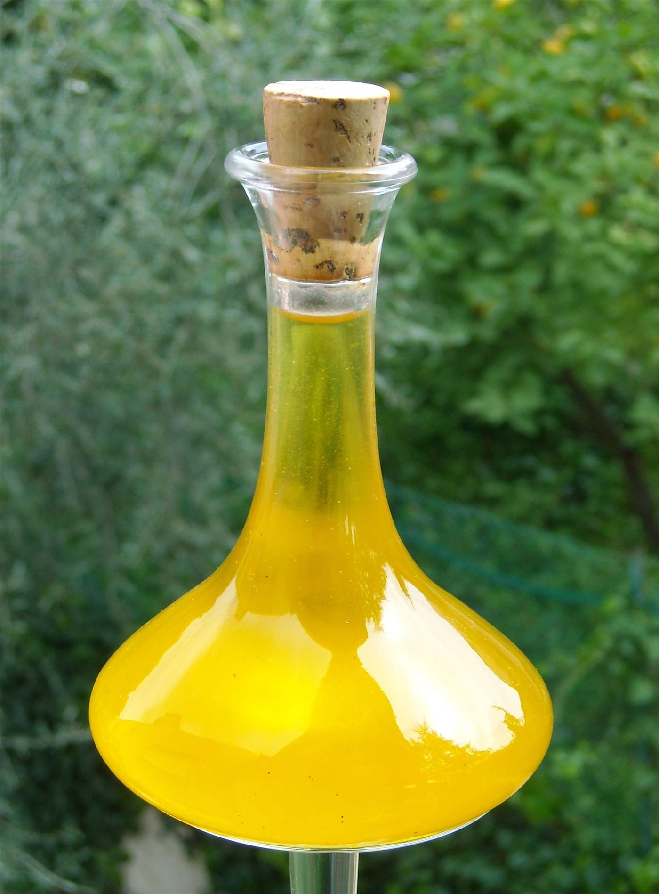

타이완 ‘문제 식용유’ 파문 확산… 지방정부-중앙 책임 공방
타이완에서 특정 업체의 식용유를 둘러싼 안전 논란이 번지면서, 지방정부와 중앙정부가 책임 소재를 두고 공방을 벌이고 있다. 대형 유통·외식 업체가 잇따라 영향을 확인하고 회수·환불에 나섰다.
유종한 기자 · 2026.07.24
橋대만

연합보(聯合報) 등에 따르면, 문제가 된 식용유의 유통 경로를 추적하는 과정에서 여러 프랜차이즈와 유통점이 영향권에 든 것으로 나타났다. 일부 대형 매장은 해당 상품 목록을 공개하고 조건에 맞으면 환불하겠다고 안내했다.
광고 문의 · 300×250지방정부 책임자는 중앙정부의 대응을 강하게 비판했고, 중앙정부 측도 반박에 나서면서 정치적 공방으로 번졌다. 식품 안전 사안이 행정 책임 논쟁으로 확대된 모양새다.
소비자 사이에서는 구매 이력과 회수 대상 품목을 확인하려는 문의가 이어지고 있다. 당국은 유통 경로와 검사 결과를 순차적으로 공개하겠다고 밝혔다.
식품 안전은 제조·유통·감독의 어느 단계에서 문제가 생겨도 소비자 신뢰가 크게 흔들리는 사안이다. 재발 방지를 위한 이력 추적과 표시 강화가 과제로 제시된다.
구체적 회수 대상과 검사 결과는 각 업체·당국 공지를 확인해야 한다. 본 기사는 보도된 사실관계를 정리한 것이다.
출처·참고 (사실 확인용 — 본문은 직접 재작성)
· 聯合報 등
· 聯合報 등